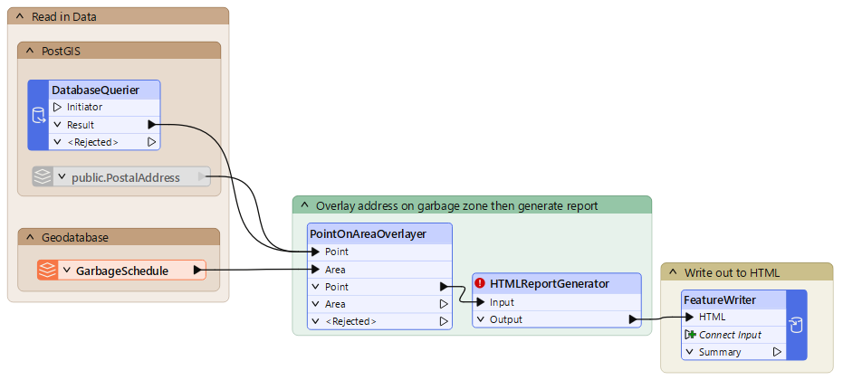
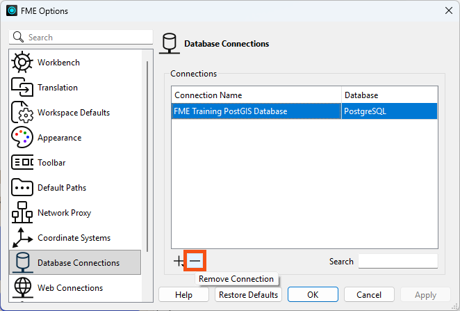
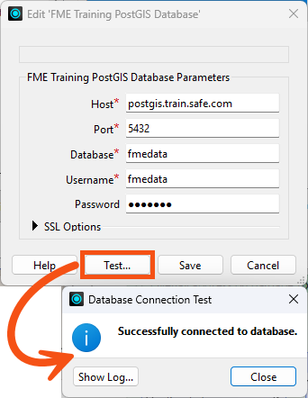
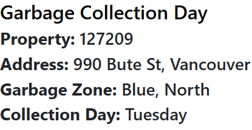
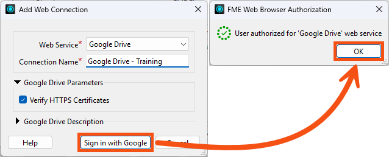
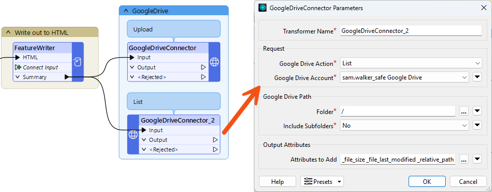
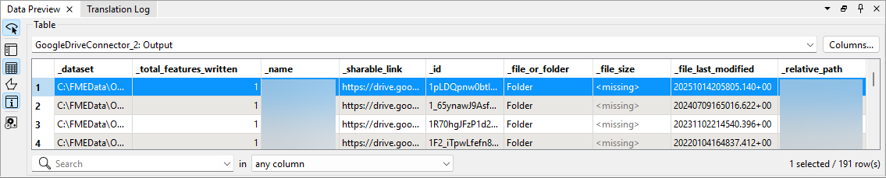
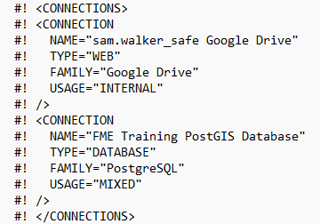

We don't have a video for this section yet.
After completing this lesson, you’ll be able to:
We don't have a video for this section yet.
A great many FME readers, writers, and transformers need to authenticate to an external system, such as a relational or spatial database, an OAuth-protected web service, or an FME Flow instance. Re-typing those credentials in every workspace is tedious, error-prone, and exposes secrets to anyone who can read the workspace XML.
A connection is a saved, named bundle of authentication parameters that FME stores outside the workspace. The workspace references the connection by name only; the username, password, host, OAuth token, and other parameters never appear in the .fmw file or in the Navigator. Edit the connection once, and every workspace that uses it automatically picks up the change.
It is possible to embed credentials instead of using a connection, but we do not recommend it. This option is less secure and harder to maintain.
FME divides connections into two categories:
[Screenshot placeholder — Reader Parameters dialog with the Connection drop-down expanded, showing a saved named connection selected instead of Embed Connection Parameters. Alt text: “Reader Parameters dialog with a named database connection selected from the Connection drop-down.”]
Database connections are managed under Utilities > FME Options > Database Connections. The page lists every database connection visible to your current user and current storage location.
You can add a connection in two places:
You can also right-click an existing connection to Duplicate, Export, or Import it. Exporting prompts for an optional password — if you set one, it must be at least 12 characters.
The following characters are not allowed in connection names:
^ \ / : * ? " < > | & = ' + % #
[Screenshot placeholder — FME Options > Database Connections page with the Add [+] button highlighted and a few existing database connections in the list (PostGIS, SQL Server, Snowflake). Alt text: “FME Options Database Connections page with the Add button highlighted and several saved connections listed.”]
Web connections are managed under Utilities > FME Options > Web Connections. There are two layers to understand:
To register your own web service, on the Web Connections page click Manage Services. On the Manage Web Services dialog, you have two options:
To add a connection against that service, return to the Web Connections page and click Add [+] > Add. Pick the web service, name the connection, and click Authenticate. For OAuth 2.0 services FME opens your browser, the provider asks you to sign in and authorize FME, and the access token is returned and stored in the connection. You can also add a web connection on demand from within a workspace. For example, in the HTTPCaller’s Authentication Method > Web Connection drop-down, pick Add Web Connection.
The Client Id and Client Secret embedded in the pre-registered OAuth services belong to Safe Software and are subject to shared rate limits and provider-side outages outside Safe’s control. Register your own service before relying on a web connection in production.
[Screenshot placeholder — Manage Web Services dialog open in front of the Web Connections page, with the “Create From” menu showing Google Drive, Dropbox, OneDrive, Box, ArcGIS Online, Bentley ProjectWise, and other templates. Alt text: “Manage Web Services dialog with the Create From templates list expanded, showing common cloud service templates.”]
FME has to put the connections somewhere. Where it lives is configured under Utilities > FME Options > Default Paths > Connection Storage. You can click Manage > Change Connection Storage to switch modes. FME supports three modes.
Personal Database
The default mode. Connection data is stored and encrypted in the current user’s OS profile. On Windows the data file is typically at:
C:\Users\<username>\AppData\Roaming\Safe Software\FME\fme_userconnection.data
Connections in this mode are visible only to the OS user who created them; even other accounts on the same machine cannot read them. This is the right choice for individual desktop authoring and personal credentials.
Shared Database
For teams that want to author using the same set of connections, choose Shared Database. You specify two folders in the Change Connection Storage dialog:
Any user who can read both folders sees the shared connections. When Connection Storage is Shared, the Visibility field on each individual connection becomes meaningful. Set a connection to Shared to publish it to other users on the share, or leave it as your private connection within the shared store.
FME Flow as a Connection Store
Starting in FME 2025.0, you can point Connection Storage at an FME Flow instance. The connection data, the key file, and the connections themselves live on FME Flow; FME Form pulls them in on demand, and the same connections are reused by FME Flow at workspace runtime. You authenticate to FME Flow once (under Default Paths) and your team’s database and web connections appear inside FME Workbench automatically. There is no shared network drive to administer and no manual upload step when you publish a workspace to FME Flow, as the connection is already there.
This mode is useful for ensuring your local connections stay in sync with organizational connections shared via FME Flow.
Encryption Keys
Whichever storage mode you pick, the credentials inside it are encrypted at rest. What differs is where the key comes from and who can read it:
The Default Paths page in FME Options also allows you to define paths to other shared FME content like custom transformers. This option is especially useful for workgroups. For instance, if an entire workgroup uses just a few custom coordinate system definitions, keeping these definitions in one place means that everyone doesn't have to have a copy. Then, whenever any of the definitions are updated, the entire group automatically has access to the new version. Each time you start FME, it scans these folders and makes their content available.
Note that connection files are not shared this way; you must use one of the three options outlined above due to encryption requirements.
Exercise

The City’s Planning Department runs an internal “What day is my garbage collected?” lookup. The workspace reads a postal address from the PostGIS database hosted on Amazon RDS, overlays it on the garbage zones, and writes a small HTML report. The Department lead has asked Frank to:
This exercise uses the Safe Software training PostGIS database hosted on Amazon RDS. No extra license is required. If you are taking a Safe Software-hosted training course, the connection FME Training PostGIS Database already exists on your training machine. You will delete and recreate it here so you have practiced the workflow.
The workspace uses a DatabaseQuerier to read a specific address from a PostGIS database and an Esri Geodatabase reader that reads the GarbageSchedule. The DatabaseQuerier makes an SQL query and uses the named database connection FME Training PostGIS Database for credentials. These two datasets go in to a PointOnAreaOverlayer. After identifying the garbage zone for an address, the workspace uses an HTMLReportGenerator and a FeatureWriter (using the Text File format) to create the report.
There is a bug in FME 2026.1 impacting the HTMLReportGenerator (fixed in FME 2026.1.2). It appears invalid, but the workspace still functions correctly. You can ignore the incorrect invalid state.

You will learn more about the FeatureWriter in a later course. For now, suffice to say, it is a transformer that allows you to write data and then have the workspace continue processing.
We've also included a disabled PostGIS reader with a PostalAddress reader feature type in the starting workspace. You can see how that compares to using the DatabaseQuerier, if you want. The WHERE clause that restricts reading to a single address is configured on the reader feature type.
Let's delete the database connection so we can practice adding it. If you don't already have the FME Training PostGIS Database connection, you can skip this step.


AddressID a value of 127209.
Now let's set up the workspace to upload the report to a cloud folder. Choose any cloud service you have an account on. Any of the following work in FME out of the box via dedicated Connector transformers.
If you do not have a preference, Google Drive is a quick option: Safe Software provides a Google Drive template, and the OAuth flow takes a few clicks.
For training, you may skip this step and use the pre-registered service that ships with FME. Pick it directly in step 8. Never rely on the pre-registered service in production: it uses Safe Software’s shared credentials and is subject to provider-side rate limits and outages outside Safe’s control.

Pick one of the two patterns below depending on what your chosen service supports and what you want to try. The names of the parameters will vary between Connectors, but the overall structure is similar.
Pattern A: Upload the HTML Report
_dataset, which the FeatureWriter created./Garbage Day Reports/${AddressID}.html.Pattern B: List a Directory

AddressID a value of 127209.
